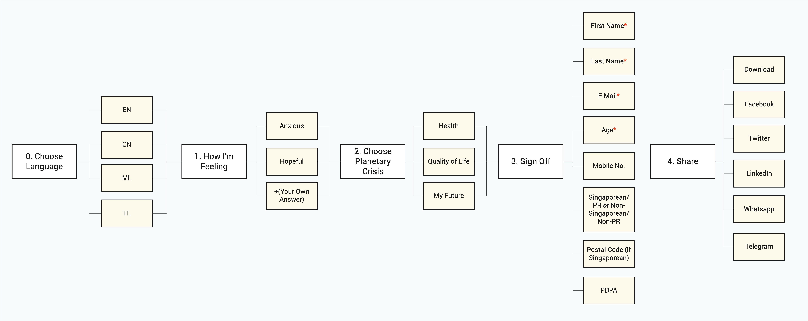
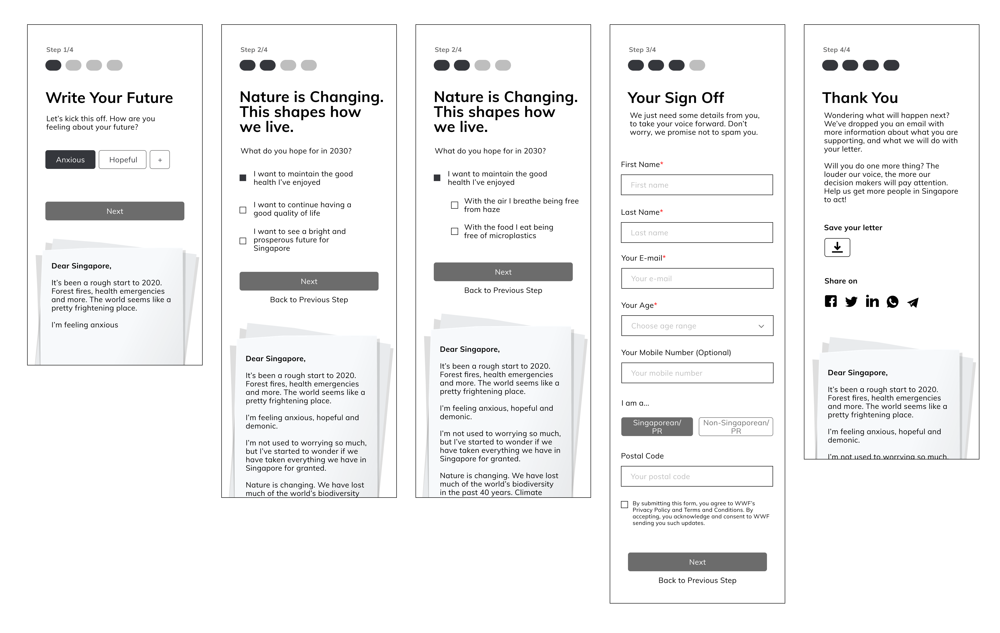

Technical Requirements & Constraints
I gathered a list of technical requirements sought by stakeholders and pointed out the constraints for that particular requirement (if any).
| Requirements | Constraints |
|---|---|
| Letter can be shared to social media | - |
| Letter is exportable (in JPEG/PNG) | - |
| Mobile responsive | - |
| Letter can be previewed pre- and post- creation | Letter preview is cut off in mobile breakpoint. Users need to scroll down to see what their letter looks like. |
| Letter has a grammar checker | We had to do without grammar checkers as it is a paid service |
| Letter is visible in preview displays on social media | It may look cut off in the preview displays on social media. The letter's measurements are 686px (W) by 853px (H). Facebook scales down preview images to 500px (W). Since the letter has a longer height, the letter will get cut off. |
Thematic Analysis
The open letter seeks three outcomes:
Maintain the good health of Singaporeans by addressing environmental threats caused by deforestation, exploitation and pollution.
Achieve a good quality of life for Singaporeans by preserving natural environments and biodiversity in Singapore and the region.
Ensure a bright and prosperous future for Singapore by ultimately stopping climate change.
Together with the editorial team, we categorised the desired outcomes into three themes for the open letter:
Health
The air I breathe being free from hazeThe food I eat being free from microplastics
Quality of Life
Amazing wildlife and natural green spacesThe food I love remaining readily available and affordable
My Future
My home safe from sea levels rising and climate changeConfidence in my family's future
These themes were then used as options (input group) in the open letter UI so that users can customise their open letter
User Flow
The end goal for users is to generate their signed open letter and disseminate it online.
Together with the Editorial team, we created a user flow to plan how users can achieve this.

When I looked at the user flow, I knew we had to design a wizard process because the open letter has to flow in a prescribed order, and subsequent steps depend on information entered in previous ones.
Quick Wireframing to Test & Iterate
I quickly created mid-fidelity wireframes for in-house testing and iterations.

I conducted both moderated and unmoderated testing with my colleagues in WWF-Singapore. Their feedback and the subsequent changes I made in response are shown in the table below:
| Feedback | Result |
|---|---|
| Process felt too long because 1. there is an additional step after choosing a theme 2. they couldn't tell the 'additional step' is relevant to the theme that they just opted for |
Instead of presenting the options of the user's chosen theme in the next step, I collapsed all options under the 3 themes. Options are disabled before user checks that particular theme |
Font above progress bar is too small | I changed the font from 14px to 18px |
High-Fidelity Prototype
After rounds of testing and refining designs, I developed a high-fidelity prototype of the open letter.
Impact
After 1 month, we gathered 351 individuals who have signed our open letter. Below are the findings:
Engagement Rate:
Gen A (Below 18) — 35 individuals, 10%
Gen Z (18 to 24) - 113 individuals, 32.2%
Millenials (25 to 35) - 117 individuals, 33.3%
Xennials (36 to 50) - 60 individuals, 17.1%
Gen X (51 to 69) - 23 individuals, 6.6%
Boomers (70 and Above) - 3 individuals, 0.9%
Most to Least Worried:
92% worried about family's future
91% worried about wildlife and natural green spaces
91% worried about sea levels rising and climate change
90% worried about food not being free from microplastics
89% worried about the air they breathe
88% worried about food security
Learning Lessons
Difficult targeting every age group
The challenge in targeting every age group is how diverse they are. We tried to appeal to a wide variety of people by translating the letter into Singapore's four main languages. However, only 3 out of 351 users had opted to translate the letter into languages other than English.
The low number of users choosing to use the translator could be attributed to how our marketing appealed the most to Millennials with English being the language of choice among this age group. Thus, we could have maximised our success by crafting a UX & marketing strategy for each age group.
Quick feedback loops
Back in WWF-Singapore, we had meetings everyday while preparing for our biggest annual event — Earth Hour.
I used these meetings to test my designs and gather feedback from the team. It was a continuous cycle of refining my designs and this process has truly helped me efficiently address the issues we faced.
Tracking metrics of users sharing on social media
For this project, we only tracked user engagement rate and we considered it a success.
In hindsight, it would have been a better measure of success to track the amount of users sharing it on their social media platforms because the goal of this project is to have the open letter go viral and, be read and acknowledged by corporations and the government.
Read Next

Decentralised Browser
An intuitive and secure browser where users are in control of their data.